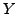
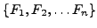

Which Digit?
 |
 |
|||
 |
 |
|||
 |
|
Which Digit? |
|
Update: 11/29: Some small fixes to the code. Make sure and download the updated version.
In this checkpoint, you will design two classifiers: a naive bayes classifier and a perceptron
classifier. You will test your classifiers on two image datasets: a set of scanned handwritten digit
images and a set of face images in which edges have been detected. Even your simple classifiers will
be able to do quite well on these tasks with enough training data.
Optical character recognition (OCR) is the task of extracting text from sources in image formats. The first
set of data you will run your classifiers on is a set of handwritten numerical digits (0-9). This is a very
commercially useful technology similar to a technique used by the US post office to route mail by zip codes.
There are systems that can perform with over 99% classification accuracy
(see LeNet-5 for an example system in action).
Face detection is the task of localizing faces within video or still images where the faces can be at any
location and vary in size. There are many applications for face detection including human computer
interaction and surveillance applications. You will attempt a reduced face detection task in which you are
presented with an image one which an edge detection algorithm has been computed. Your task will be to determine
whether the edge image you have been presented is a face or not. There are several systems in use that perform
quite well at the face detection task. One good system is the Face Detector by Schneiderman and Kanade. You can even try it out on
your own photos in this demo.
The code for this project contains the following files and data files, available as a zip file.
What to submit: You will fill in portions of Evaluation: Your code will be autograded for technical
correctness. Please do not change the names of any provided functions
or classes within the code, or you will wreak havoc on the autograder. Your
answers to discussion questions will also be graded.
Academic Dishonesty: We will be checking your code against
other submissions in the class for logical redundancy. If you copy someone
else's code and submit it with minor changes, we will know. These cheat
detectors are quite hard to fool, so please don't try. We trust you all to
submit your own work only; please don't let us down. Instead, contact the course
staff if you are having trouble.
To try out the classification pipeline, run dataClassifier.py from the command line. This
will classify the digit data using the default classifier (mostfrequent) which classifies every example
as the most frequent class. Which digit is it picking?
> python dataClassifier.py
Introduction
Classification
data.zipData file including digit and face data.
classificationMethod.pyAbstract superclass for the classifiers you will write. You do not need to modify this file.
samples.pyCode to read in the classification data. You do not need to modify this file.
util.pyCode defining some useful tools. You may be familiar with some of these by now, and
they will save you a lot of time.
mostFrequent.pyA simple example classifier that labels every instance as the most frequent class. You do not
need to modify this file
naiveBayes.pyThe main code where you will write your naive bayes classifier.
perceptron.pyThe main code where you will write your perceptron classifier.
dataClassifier.pyThe wrapper code that will call your classifiers. You will write your enhanced feature extractors here.
naiveBayes.py,
perceptron.py and dataClassifier.py
(only) during the assignment, and submit them. The only other file you
should submit is a readme in .txt or .pdf format in which you answer any written
questions and in which you should clearly note your partner's name and login (if
you are working in a pair).Getting Started
Once you have filled in the appropriate code you can test your classifiers using the following command line options:
> python dataClassifier.py data classifiertype features numtraining
where data is (faces or digits), classifiertype is (naivebayes or perceptron), features is (basic or enhanced),
and numtraining is the number of training examples to use.
To run your classifiers with odds ratio computations use:
> python dataClassifier.py data classifiertype features numtraining odds class1 class2
where class1 and class2 are from {0,1,...9} for digits or {0,1} for faces.
The data for the digit instances are encoded as 28x28 pixel images giving a vector of 784 features for each data item. Each feature is set to 0 or 1 depending on whether the pixel is on or not.
A canny edge detector has been run on some face and non-face images of size 60x70 pixels, giving a vector of 4200 features for each item. Like the digits, these features can take values 0 or 1 depending on whether there was an edge detected at each pixel.
A naive Bayes classifier
models a joint distribution over a label  and a set of observed
random variables, or features,
,
using the assumption that the full joint distribution can be factored
as follows:
To classify a datum, we can find the most probable class given the feature values for each pixel:
Because multiplying many probabilities together often results in underflow, we will instead compute log probability which will have the same argmax:
We can estimate directly from the training data:
The other parameters to estimate are the conditional probabilities of
our features given each label y:
 . We do this for each
possible feature value ().
. We do this for each
possible feature value ().
The basic smoothing method we'll use here is Laplace Smoothing which essentially adds k counts to every possible observation value:
If k=0 the probabilities are unsmoothed, as k grows larger the probabilities are smoothed more and more. You can use your validation set to determine a good value for k (note: you don't have to smooth P(C)).
Another tool for understanding the parameters is to look at odds ratios. For each pixel
feature and classes  , consider the odds ratio:
, consider the odds ratio:
The features that will have the greatest impact at classification time are those with both a high probability (because they appear often in the data) and a high odds ratio (because they strongly bias one label versus another).
Fill in the function findHighOddsFeatures(self, class1, class2). It should return 3 counters, featuresClass1 which are the 100 features with largest , featuresClass2 which are the 100 features with largest , and featuresOdds the 100 features with highest odds ratios for class1 over class2.
Unlike the naive Bayes classifier, the perceptron does not use
probabilities to make its decisions. Instead, it keeps a
prototype of each class . Given a feature list  ,
the perceptron predicts the class whose prototype is most similar
to the input vector
,
the perceptron predicts the class whose prototype is most similar
to the input vector  . Formally, given a feature vector
. Formally, given a feature vector  (a map
from properties to counts, pixels to intensities), we score each class with:
(a map
from properties to counts, pixels to intensities), we score each class with:
Using the adding, subtracting, and multiplying functionality of the Counter class in util.py, the perceptron updates should be relatively easy to code. Certain implementation issues have been taken care of for you in perceptron.py, such as handling iterations over the training data and ordering the update trials. Furthermore, the code sets up the weights data structure for you. Each legal label needs its own protoype Counter full of weights.
Fill in the function findHighOddsFeatures(self, class1, class2). It should return 3 counters, featuresClass1 which are the 100 features with largest weights for class1, featuresClass2 which are the 100 features with largest weights for class2, and featuresOdds the 100 features with highest difference in feature weights.
Building classifiers is only a small part of getting a good system working for a task. Indeed, the main difference between a good system and a bad one is usually not the classifier itself (e.g. perceptron vs. naive Bayes), but rather rests on the quality of the features used. So far, we have used the simplest possible features: the identity of each pixel.
To increase your classifier's accuracy further, you will need to extract more useful features from the data. The EnhancedFeatureExtractorDigit and EnhancedFeatureExtractorFace functions in dataClassifier.py are your new playground. Look at some of your errors. You should look for characteristics of the input that would give the classifier useful information about the label. For instance in the digit data, consider the number of separate, connected regions of white pixels, which varies by digit type. 1, 2, 3, 5, 7 tend to have one contiguous region of white space while the loops in 6, 8, 9 create more. The number of white regions in a 4 depends on the writer. This is an example of a feature that is not directly available to the classifier from the per-pixel information. If your feature extractor adds new features that encode these properties, the classifier will be able exploit them.
Try adding some other features for both the digit and face datasets and see how they affect performance. Before implementing features haphazardly, think about what additional information would help guide your classifier on its mistakes. This question will not be graded on improvement, but instead on the thoughtfulness by which you consider your classifier's errors and attempt to capture new information that might remedy them. Also test to see if certain features help performance when the classifier has only a few training instances. You should implement at least one new feature type of your devising for each dataset, but you should discuss at least 3 ideas total.